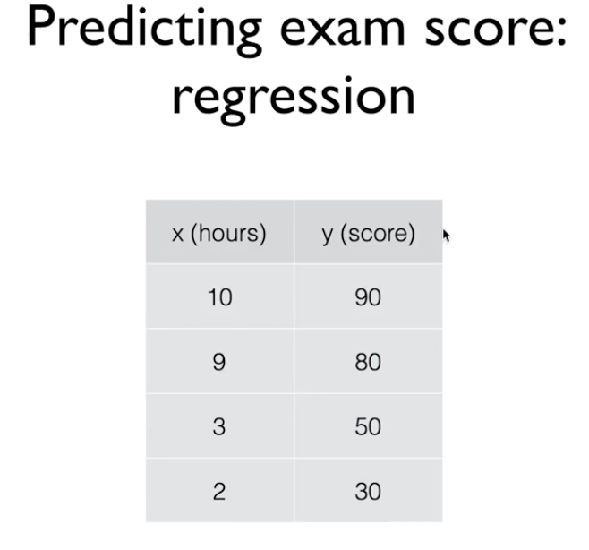

Linear Regression
Linear Regression
선형 회귀
우리가 몇시간을 공부하면 어느 정도의 성적을 얻게 될것인가 예측한다고 가정하자.
0 ~ 100 점을 예상하는데, 이렇게 범위를 예측하는 경우를 Regression이라 한다.

위와 같은 모델을 학습시킬 데이터를 학습 데이터 ( Training Data ) 라고 한다.
세상에 있는 많은 데이터나 현상들이 이렇게 Linear 한 형태( 선형 )의 모습을 취하고 있다. 가장 적절한 선을 찾아 나가는 과정이 Linear Regression 학습 방법 입니다.

그럼 가장 적절한 선은 어떻게 찾아야할까?
선과 실제 데이터의 차이를 손실이라 하는데 이 손실을 찾는 방법을 Cost function이라한다.
실제 데이터와 예측값 사이의 차이를 제곱한다. 제곱을 함으로써 음수값도 양수 값으로 만들 수 있다. if문으로 음수일 때 -1을 곱하는 방식을 취하지 않는 이유는 모든 값에 if문을 돌리면 엄청나게 리소스가 낭비된다.

모든 손실값의 제곱 데이터를 합치고 갯수로 나눠서 손실의 평균을 낸다.
실습
주어진 x 값에 대한 예측
예측 값과 실제 값 사이의 차
학습을 한다는 것은 이 실손을 최소화 하는 과정

3가지 단계로 진행할 것
- 그래프를 만들고
- 그래프를 실행시키고
- 그 래프에 값을 업데이트한다.

1. TF를 사용해 그래프 그리기
H(x) = Wx + b 라는 공식을 구현하기 위해서 텐서 플로우에서는 Vriable을 정의한다.
tf.Variable
프로그램에 의해 변화하는 공유된 지속 상태를 표현하는 방법입니다.
하나의 Variable은 하나의 텐서를 표현하는데, 텐서값은 텐서의 연산을 수행아여 변경시킬 수 있습니다. 특정한 연산은 (학습) 이 텐서값을 읽고 수정합니다.
tf.Keras 같은 고수준의 라이브러리는 모델 파라미터를 저장하는데 Variable을 사용합니다.
x_train = [1,2,3]
y_train = [1,2,3]
w = tf.Variable(tf.random.normal([1]),name = 'weight')
b = tf.Variable(tf.random.normal([1]), name = 'bias')
변수를 만드는데 첫번째 인자로 tf.random.normal([1])를 사용했습니다. 이것의 의미는 이 변수의 Shape 를 표시하는 부분으로 랜덤한 타입의 1차원 변수가 들어간다는 의미입니다.
가정 공식(hypothesis)는 다음과 같습니다.
hypothesis = x_train * w + b
그리고 손실 함수는 다음과 같습니다.
const = tf.reduce_mean(tf.square(hypothesis - y_train))
여기서 reduce_mean은 평균을 내주는 함수입니다.
t = [1,2,3,4]
tf.reduce_mean(t) => 2.5
텐서플로우에는 이런 cost를 minimize - 최소화 해주는 방법으로 GradientDescentOptimizer를 사용해서 손실을 최소화하도록 변수를 수정하게 됩니다.

tensorflow 에서 보면 train은 cost가 필요하고 cost는 hypothesis가 필요하고 hypothesis는 w와 b 가 필요합니다. 이렇게 tensor로 연결되어 train만 실행하면 점점 w와 b가 수렴해 나갑니다.
Tensorflow 2.0 에서 Gradient Descent
경사 하강법
위 포스트에는 경사하강법을 구현하는 3가지 방법이 나와있고 그 중 첫번째 방법이 강의에서 보여준 minimizer 방법이기 때문에 이 방법으로 구현한 코드를 설명합니다.
x_train = [1,2,3]
y_train = [1,2,3]
def hypothesis(w,b):
# 가설
return x_train * w + b
def cost(w,b):
# 손실
return tf.reduce_mean(tf.square(hypothesis(w,b)) - y_train)
def reset():
# 초기화
w = tf.Variable(tf.random.normal([1]), name = 'Weight')
b = tf.Variable(tf.random.normal([1]), name = 'Bias')
return w, b
def minimize():
return x_train * w + b
w, b = reset()
opt = tf.keras.optimizers.SGD(learning_rate=0.01)
for i in range(50): # steps
print (f'{cost(w,b)}, {w.numpy()}, {b.numpy()}')
opt.minimize(minimize, var_list=[w,b])
3.5544426441192627, [0.47147375], [1.382187]
2.8440845012664795, [0.41147375], [1.352187]
2.183525800704956, [0.35147375], [1.3221871]
1.5727676153182983, [0.29147375], [1.2921871]
1.0118094682693481, [0.23147374], [1.2621871]
0.5006512999534607, [0.17147374], [1.2321872]
0.03929305076599121, [0.11147374], [1.2021872]
...
25.631608963012695, [-2.408525], [-0.05781218]
27.3116455078125, [-2.468525], [-0.08781218]
Placeholder
기존에 tensorflow에서 사용하던 placeholer가 없어졌다. 이제는 그냥 tf.funcion 함수에 변수로 사용한다.
tensoflow 1.x
a = tf.placeholder(tf.float32)
b = tf.placeholder(tf.float32)
adder_node = a + b
print(sess.run(adder_node, feed_dict = (a = 3, b = 4.5)))
print(sess.run(adder_node, feed_dict = (a = [1, 3], b = [2, 4])))
=> 7.5
=> [3, 7]
tensorflow 2
@tf.function
def add_node(a,b):
return a + b
tf.print(add_node(3,4.5))
==> 7.5
tf.print(add_node(a = [1, 3], b = [2, 4]))
=> [1, 3, 2, 4]
이슈
3 + 4.5 는 정상적으로 7.5가 출력되는데, [1, 3] + [2, 4]는 [3, 7 ]이 아니라 배열 두개를 합친 [1, 3, 2, 4]이 출력되었다.
우리가 의도한 내용은 아닌데 어떻게 처리해야 할까?
tensor를 만들어서 념겨 줘야 했다.
다른 방법이 있는지는 모르겠다.
a = tf.constant([1,3])
b = tf.constant([2,4])
tf.print(add_node(a,b))
===> [3 7]
Linear Regression
텐서 플로우 2.0은 그냥 파이썬 문법과 비슷한 점이 많다. 이번에는 흔히 쓰는 Linear Regression을 Tensorflow 2.0으로 구현하는 예제 코드를 뜯어본다.
먼저, 데이터 형태는 다음과 같다.
x = [1, 2, 3, 4, 5]
y = [2.1 ,3.1 ,4.1, 5.1, 6.1]
plt.scatter(x,y,label = 'input data set')

일단 기존에 코딩하던 방식과 다르게 Lieanr 학습 모델을 만든다.
우리가 원하는 공식은 y = xw + b 라는 일차 방정식의 w,b를 찾도록 하려 한다.
# Linear Model
class LinearModel:
def __call__(self, x):
return self.Weight * x + self.Bias
def __init__(self):
self.Weight = tf.Variable(tf.random.normal([1]), name = 'Weight')
self.Bias = tf.Variable(tf.random.normal([1]), name = 'Bias')
그리고 우리가 만든 모델을 평가할 수 있는 손실 함수를 만들어야 한다.
# loss function
def loss(y, pred):
return tf.reduce_mean(tf.square(y - pred))
손실 함수는 우리가 일반적으로 사용하던 차이에 제곱을 하고 평균을 내는 방식을 사용한다.
이제 학습 함수를 만든다.
def train(linear_model, x, y, lr = 0.01):
with tf.GradientTape() as tape:
current_loss = loss(y, linear_model(x))
lr_weight, lr_bias = tape.gradient(current_loss, [linear_model.Weight, linear_model.Bias])
linear_model.Weight.assign_sub(lr * lr_weight)
linear_model.Bias.assign_sub(lr * lr_bias)
GradientTape를 사용해서 지금 손실을 계산한다.
그 손실과 지금 w, b 값을 가지고 경사 하강법의 가중치를 계산해 모델을 학습률과 가중치를 곱해 개선해 나간다.
linear_model = LinearModel()
epochs = 1000
epochs_list, losses = [], []
for epoch_count in range(epochs):
real_loss = loss(y, linear_model(x))
train(linear_model, x, y, lr=0.0005)
epochs_list.append(epoch_count)
losses.append(real_loss.numpy())
if epoch_count % 100 == 0:
print(f"Epoch count {epoch_count}: Loss value: {real_loss.numpy()}")
plt.scatter(epochs_list, losses)
plt.show()

결과를 보면
Epoch count 0: Loss value: 46.01390838623047
Epoch count 100: Loss value: 4.259484767913818
Epoch count 200: Loss value: 0.3961729109287262
Epoch count 300: Loss value: 0.03865921497344971
Epoch count 400: Loss value: 0.005514294840395451
Epoch count 500: Loss value: 0.00238317484036088
Epoch count 600: Loss value: 0.00203123246319592
Epoch count 700: Loss value: 0.0019384626066312194
Epoch count 800: Loss value: 0.0018716678023338318
Epoch count 900: Loss value: 0.0018093619728460908
학습 시킨 모델의 RMSE(평균 제곱근 오차) 를 찍어보면
RMSE = loss(y, linear_model(x))
RMSE.numpy()
==>0.001749184
이제 학습 시킨 모델에 예상 값을 적용해 예측해보자
6을 넣으면 7.1 나와야 한다.
value = linear_model(6)
value.numpy()
===> array([7.035034], dtype=float32)